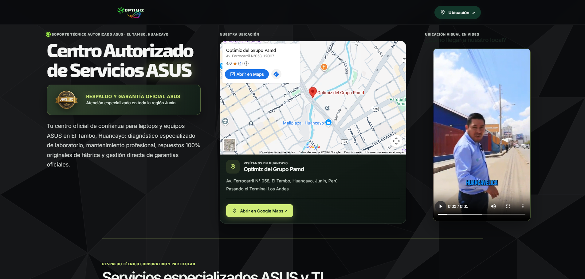
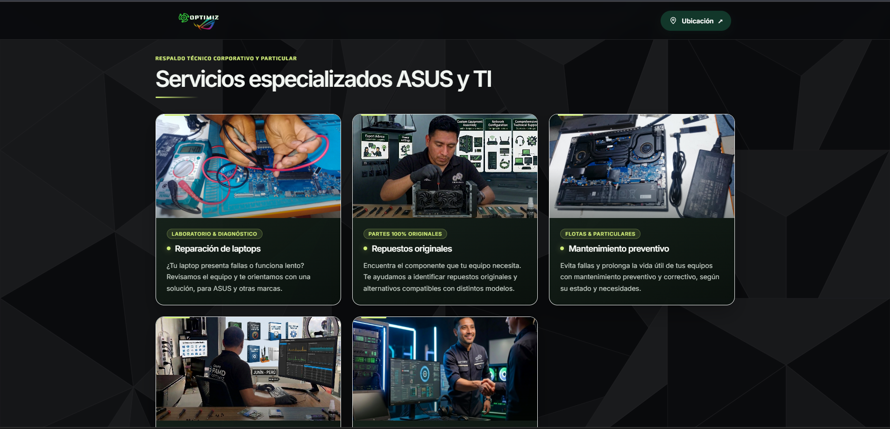
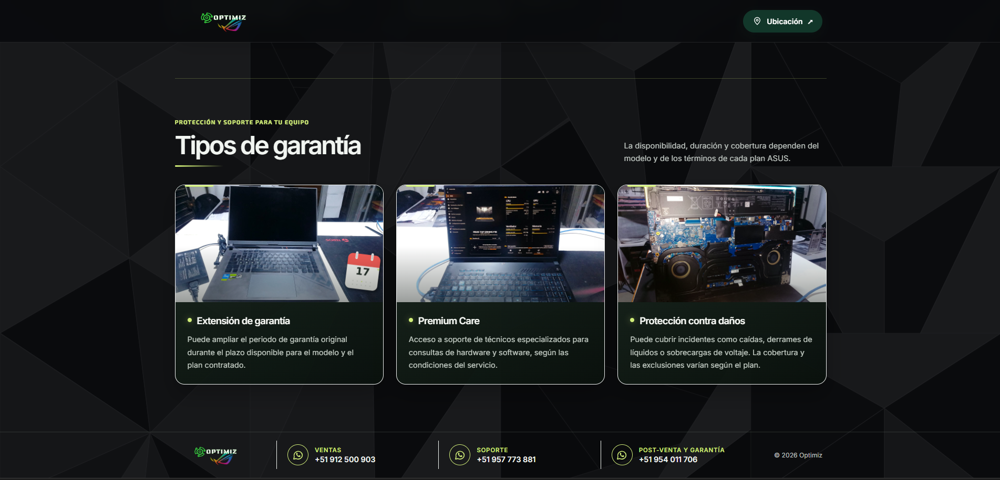

Desarrollo web
HTML · CSS · JavaScript · PHP · Laravel · WordPress
SOFTWARE · IA · DESARROLLO WEB
PORTAFOLIO PROFESIONAL
01 / PERFIL
Estudiante del quinto semestre de Ingeniería de Software con Inteligencia Artificial en SENATI, con experiencia en soporte técnico y desarrollo de páginas web y sistemas. Busco ampliar mis conocimientos y contribuir al desarrollo de soluciones de software en una organización que me permita crecer profesionalmente.
02 / TRAYECTORIA
Optimiz
Logros
Digital Tec Support
03 / EDUCACIÓN
Ingeniería de Software con Inteligencia Artificial · V semestre
Auxiliar Técnico en Soporte Técnico y Operación de Centros de Computo
Ver título ↗04 / TECNOLOGÍAS
HTML · CSS · JavaScript · PHP · Laravel · WordPress
Java · Python · XML
MySQL · MongoDB
Machine Learning · Deep Learning
Git · GitHub · Visual Studio Code · Android Studio · NetBeans
Apache · Railway · Vercel
Heroku · Hostinger · FileZilla (FTP)
Español · Nativo
Inglés · Básico
05 / CURSOS Y CERTIFICACIONES
Asistente · Escuela de Tecnologías de la Información y Administración · Organizado por SENATI · 4 horas
Ver certificado ↗Java Fundamentals y Database Foundations
Linux (System Admin I)
06 / PROYECTOS
Proyectos desarrollados durante mis prácticas profesionales en Optimiz.
SISTEMA DE GESTIÓN
Sistema de inventario para una tienda de cómputo, orientado al registro, salida y control de productos.
Proyecto web


DESARROLLO WEB
Desarrollo de una página web informativa para una empresa, con presentación de sus servicios, información de contacto, números telefónicos y ubicación integrada mediante Google Maps.
Proyecto web